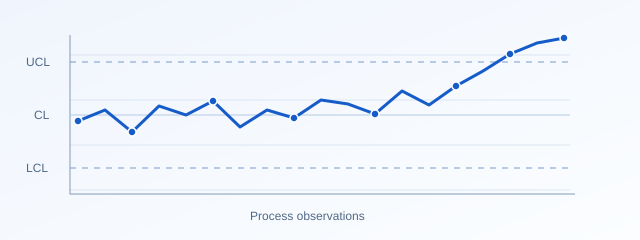
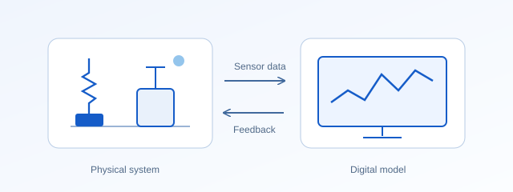
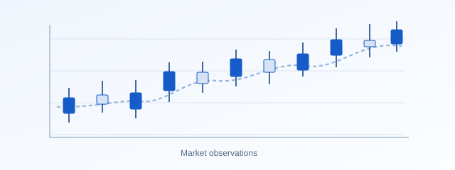

Research overview
Research
Statistical methods for detecting change, understanding data and monitoring complex systems.

Statistical process control
Mixed and adaptive memory control charts, EWMA and CUSUM methods, and efficient detection of shifts in process location and dispersion.

Machine learning for monitoring
Neural networks, supervised learning and predictive analytics for statistical process monitoring.

Digital twins
Physics-informed modelling, structural health monitoring and prognostics of dynamical systems.

Biostatistics and registries
Clinical data management, statistical analysis and web-based disease registries, informed by research experience in ophthalmology.

AI and ML for quantitative analysis
Applying artificial intelligence (AI) and machine learning (ML) to quantitative analysis of forex, stocks and cryptocurrencies.
Related interests
Additional interests listed in my CV include AI in financial markets, deep learning, computational techniques, clinical data management and web-based disease registries.
Explore research supervision →